Recap #5
Act 5, Act 2: He is already here. (Part 1)
Recap #5
Act 5, Act 2: He is already here. (Part 1)
Recap #5
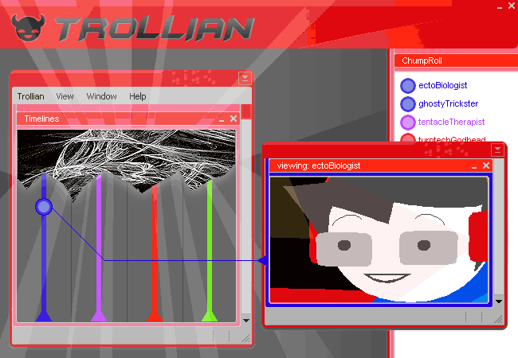
ACT 5 ACT 2 opens near the end of John’s day. Karkat contacts him for the first time, expecting a helpless target. Instead, John greets him as a friend and says the kids and trolls are working together on a plan involving the SCRATCH.
An embarrassed Karkat decides to contact progressively earlier versions of John. Their friendship develops in opposite directions: John meets an increasingly helpful Karkat, while Karkat meets a John who knows less and less.
Recap #5
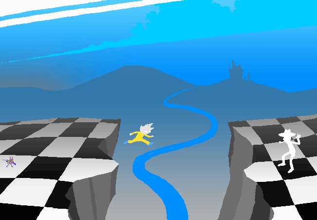
Back where Act 4 left off, John is asleep on the rocket board. His newly awakened dreamself explores the ruined Battlefield with the robot bunny and spots Dad and Rose’s mom.
Vriska wakes him just before they can reunite. Dream John disappears, dropping the White Queen’s ring into the water. Back on LOWAS, his waking self retrieves the server disc and heads home to help Jade enter.
Recap #5
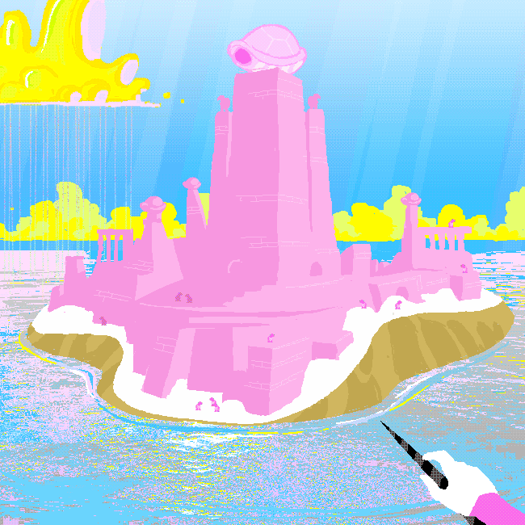
ROSE has decided that following Sburb’s usual path will not save their session. Armed with her wands and guidance from the HORRORTERRORS beyond Derse, she tears into the game’s structures to uncover its secrets.
On the Land of Light and Rain, even an entire temple is something she can pull apart in search of answers.
Recap #5
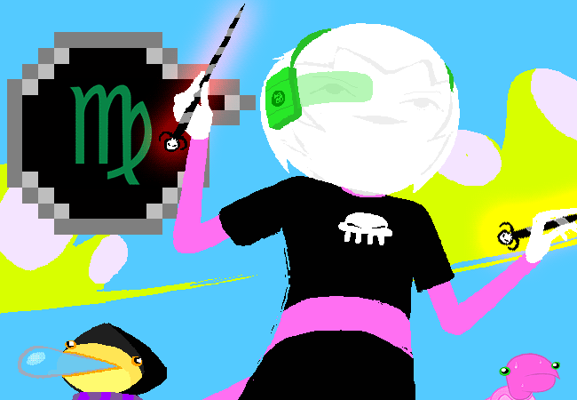
KANAYA recognizes Rose as the author of the walkthrough she found on Alternia. Their earlier conversations were tangled by time, mistaken identity, and competitive sarcasm; they gradually become friends.
Kanaya helps Rose investigate the game, but grows worried about her methods. Soon on Rose’s timeline, the Trollian viewport goes dark. Neither girl yet has a reassuring explanation.
Recap #5
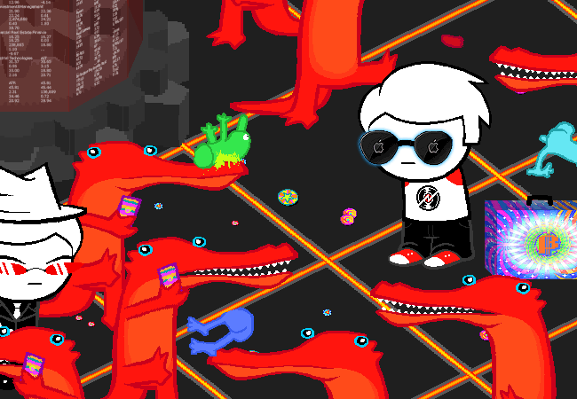
DAVE is already working ahead. With Terezi’s guidance, he uses time travel to exploit the LOHAC STOCK EXCHANGE, accumulate enormous wealth, and fit days of personal experience into the Reckoning’s remaining hours.
These are coordinated loops, with several Daves carrying out different jobs. Knowing what he has already seen happen also means he has obligations to fulfill.
Recap #5
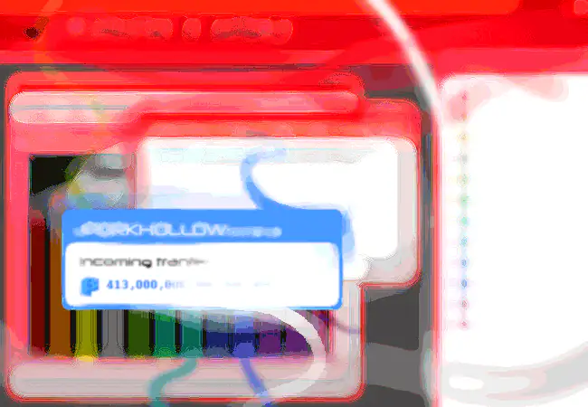
One of those obligations explains how the trolls found the kids in the first place. Dave sends Terezi money; Sollux traces the transfer to the universe the trolls created.
Terezi then guides Dave toward making the fortune that will fund that same transfer. The help and the discovery form a loop, with neither waiting for a tidy first cause.
Recap #5
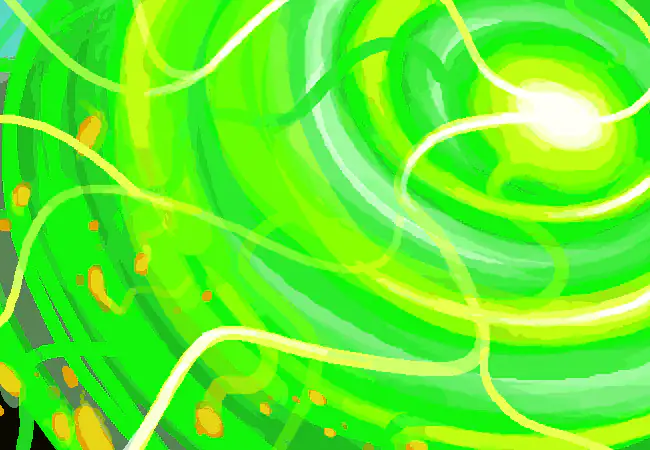
The trolls are hiding in a laboratory in the Veil while the demon destroys their session. A countdown marks the time left before a CRITICAL MOMENT.
When Karkat’s dreamself briefly awakens on Prospit, he recognizes the attacker as Jack Noir. Jack destroys Prospit and kills its dreamers. After encountering horrorterrors in his sleep, Karkat warns the others to stay awake.
Recap #5
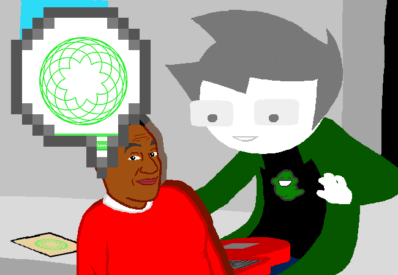
John finally connects as JADE’S SERVER PLAYER. Nannasprite provides food, a floating ghost bed, and a pendant that lets him summon her.
Meanwhile, Vriska takes a personal interest in John’s progress, just as Terezi does in Dave’s. Karkat warns the boys that the trolls’ rivalry and meddling can get them killed. His warning arrives wrapped in an extremely awkward lecture about romance.
Recap #5
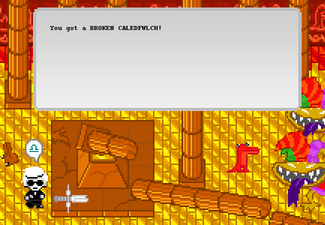
In the golden ruins of LOHAC, Dave finds CALEDFWLCH embedded in a block and breaks the sword to get it out. Davesprite explains that it matters to his quest as the Knight of Time.
When Dave abruptly falls asleep, Davesprite fights off the monsters closing in. He then leaves to join Bro in the battle against Jack on John’s planet.
Recap #5
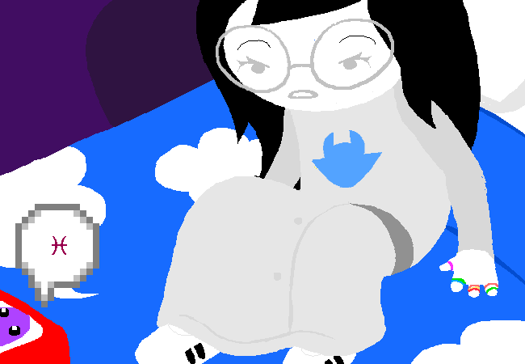
JADE survived her exploding dreambot because Bec moved her bed beneath her fall. But with her dreamself dead, sleep no longer takes her to the familiar safety of Prospit.
Feferi meets her in a disturbing dream involving the horrorterrors. Awake again, Jade also gets caught between two versions of Karkat arguing in a memo. She is frightened, frustrated, and still needs to escape the meteor headed for her island.
Recap #5
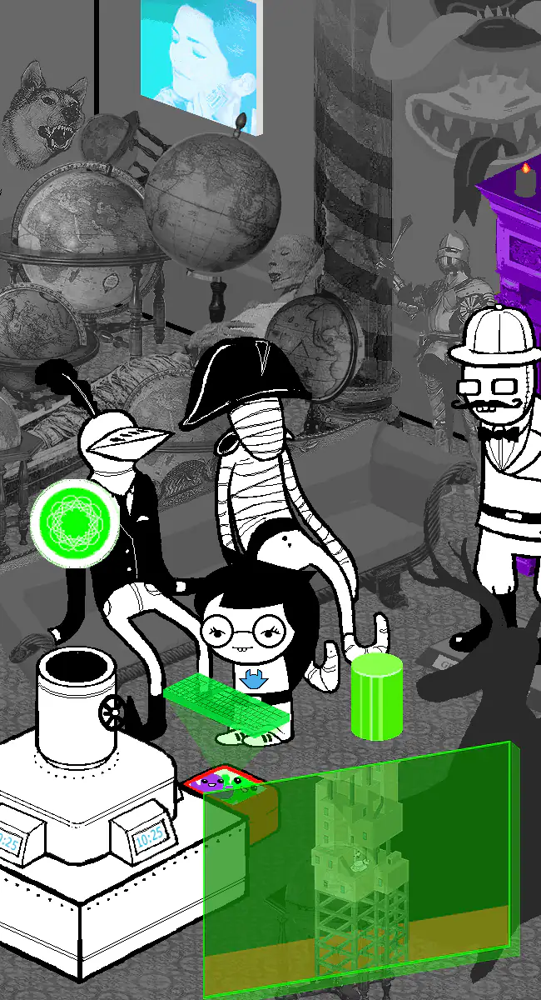
John deploys Jade’s equipment and opens the cruxtruder. The countdown gives them just TEN MINUTES AND TWENTY-FIVE SECONDS.
They know another prototyping will give Jack more powers. John hopes that using a doll missing an arm and an eye will weaken him instead.
Recap #5
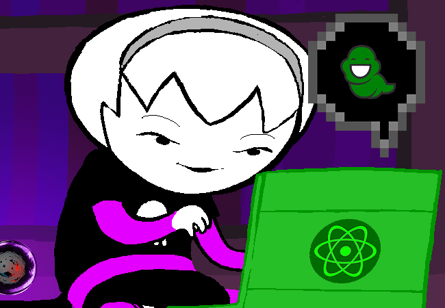
Could they simply avoid prototyping anything? Rose warns that they cannot: the fourth prototyping is needed to complete the Battlefield’s development.
She needs something growing inside its center, the TUMOR, for a plan she is putting together. John must help Jade enter without abandoning that requirement.
Recap #5
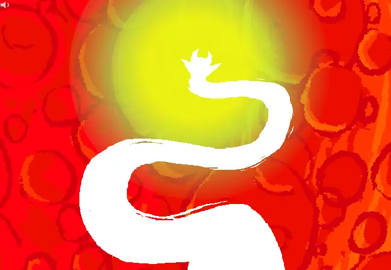
Vriska puts John to sleep before he can use the doll. BECQUEREL jumps into the kernelsprite instead, becoming BECSPRITE. His attack destroys the approaching meteor and sends a devastating green shockwave across Earth.
Jade’s entry item is a Bec-shaped piñata, paired with a blindfold she cannot remove. Falling from her shattered greenhouse, she fires her rifle. Becsprite redirects the bullet into the piñata, bringing Jade, her house, and her volcano into the Medium.
Recap #5
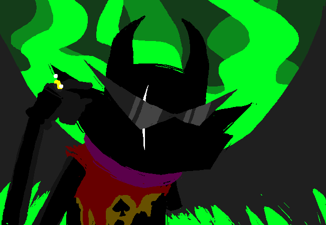
The rescue has a terrible cost. Jack’s ring inherits Bec’s first guardian powers, transforming him into BEC NOIR.
Bro and Davesprite cannot defeat him. Bro is killed with his own sword. This is the nearly invincible demon that will invade the trolls’ session, the disaster Karkat blames on the kids.
Recap #5
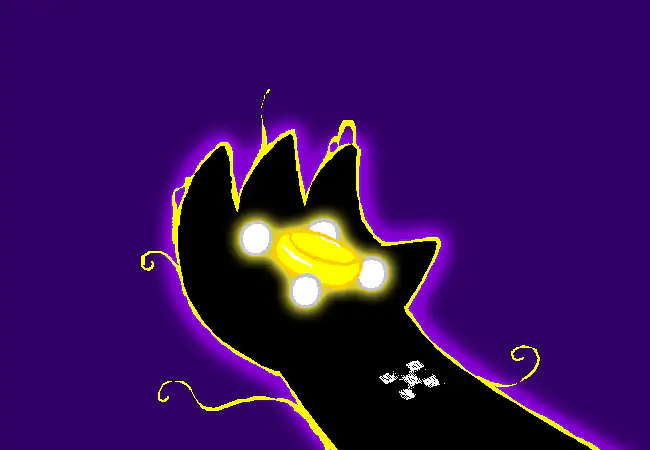
On the ruined Earth of the future, the WHITE QUEEN’S RING is still in WV’s hands. As the Warweary Villein, he found it after Dream John dropped it on the Battlefield and kept it through his exile.
Jack wears one royal ring; the other remains unworn. WV has guarded it for years without understanding its power.
Recap #5
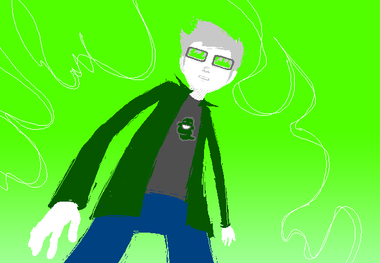
John wakes stranded in an oil ocean, his computer and Nannasprite’s pendant lost. Jack’s transformation has turned the approaching fire green.
Vriska admits she deliberately helped create Bec Noir, planning to take credit for defeating him. She argues that changing an event already established in their history would only create a doomed offshoot. That does not make her interference harmless.
Recap #5
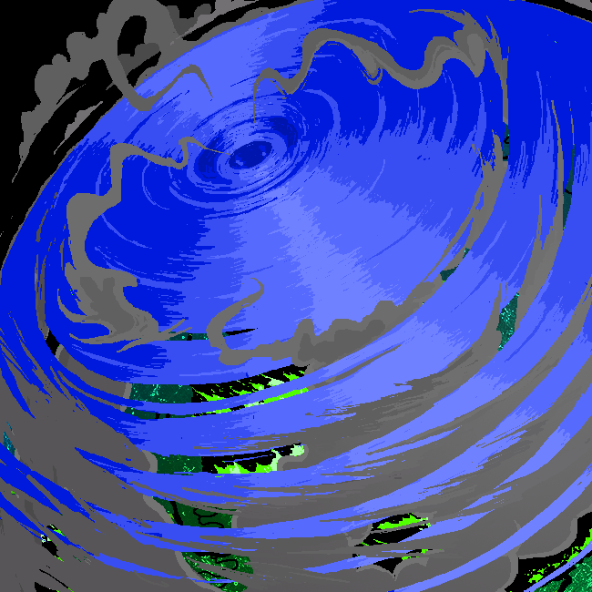
With the fire closing in, Vriska urges John to use his powers. From the exile terminal, WV adds his own increasingly urgent instructions.
John does THE WINDY THING. A vast breeze extinguishes the fires across LOWAS, clears its clouds for a moment, and carries him to safety. His abilities as the HEIR OF BREATH are becoming real.
Recap #5
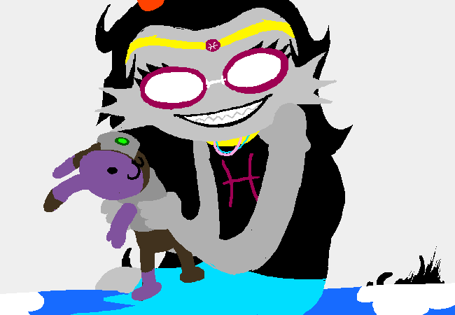
Jade has escaped Earth, but her dreams are still unsettling. An old conversation with Feferi becomes a shared meeting: Feferi appears beside her, with a dead troll’s white eyes, and says she is dead.
Feferi asked the horrorterrors to make DREAM BUBBLES where people could meet in their sleep. Jack killed her dreamself when he destroyed the trolls’ Derse. How Feferi herself died has not yet been shown.
Recap #5
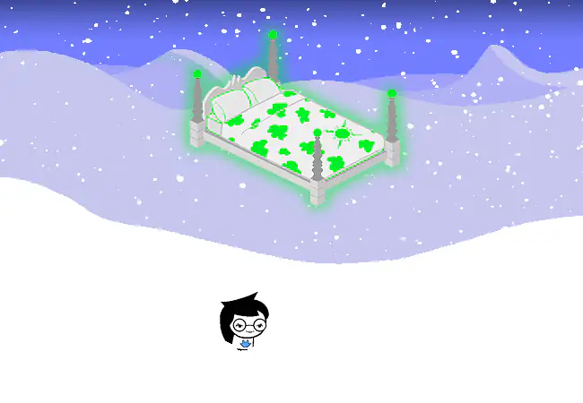
Jade wakes in the LAND OF FROST AND FROGS, or LOFAF. Her tropical island has arrived in a world of snow.
An encounter with an imp demonstrates another consequence of Bec’s prototyping: even the ordinary enemies now have teleportation powers. The fight sends Jade across the session, briefly crossing several points in Dave’s looping day.
Recap #5
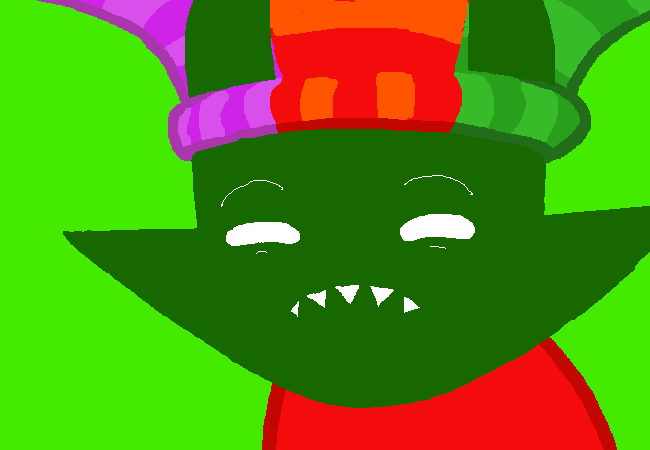
Becsprite destroys the imp and continues protecting Jade, but he is still a dog. He cannot explain the game to her in words.
When PM tries to guide Jade through an exile terminal, Becsprite detects the intrusion and destroys the screen. Jade’s powerful guardian is also cutting off a source of help.
Recap #5
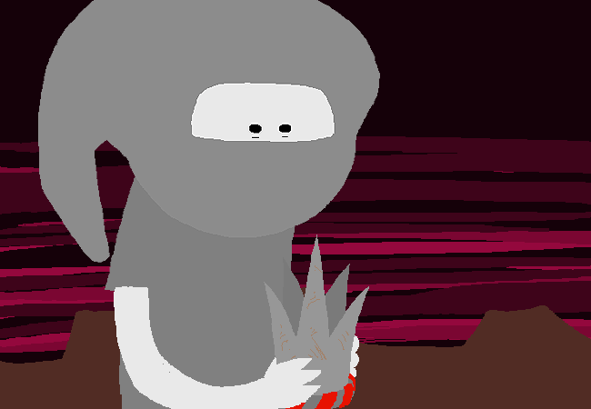
On post-apocalyptic Earth, PM accepts the White Queen’s crown. The former queen becomes her royal adviser, complete with a mailing label that PM supplies for the new job.
The exiles are still building a life together, even as their terminals connect them to the disasters unfolding in the kids’ session.
Recap #5
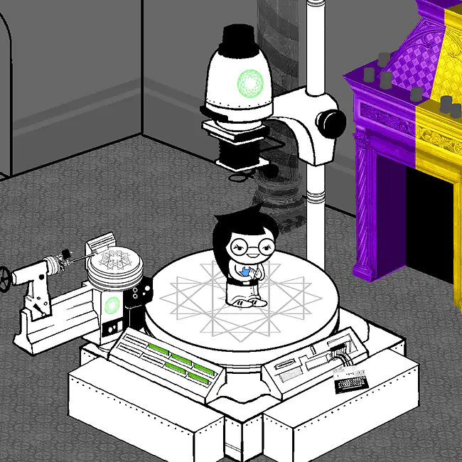
With John’s computer lost, DAVE copies his Sburb disc and takes over as Jade’s server player. His time loops let him help both her and Rose.
He replaces Jade’s destroyed alchemy equipment, upgrades it, and shares his accumulated grist. She can finally make equipment for herself.
Recap #5
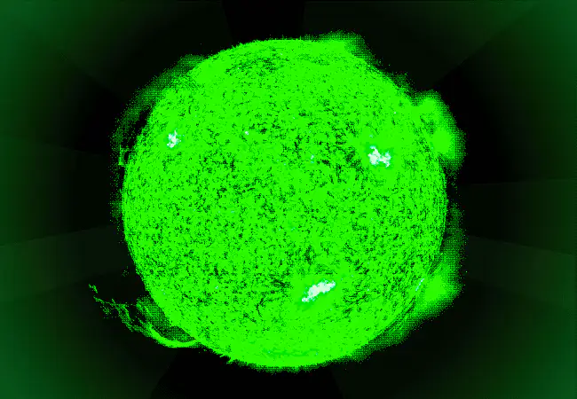
Rose’s search for a way to stop Jack leads to the GREEN SUN, an immense star in the Furthest Ring. It supplies the powers of first guardians such as Bec and Doc Scratch, and therefore the powers Jack inherited.
Doc Scratch gives Rose information and says he wants to die, having finished his work to prepare for Lord English. Rose sees a possible common goal; Dave questions whether Scratch can be trusted.
Recap #5
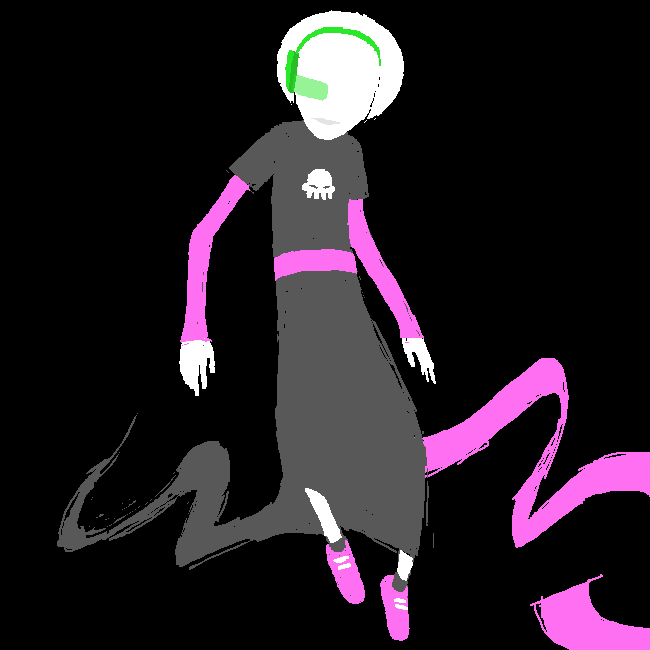
Rose tells Dave her plan: the TUMOR is a bomb inside the Battlefield. John must retrieve it and bring it to her dreamself. Dave must listen to the horrorterrors and map a route through the Furthest Ring.
Her dreamself would carry the bomb to the Green Sun and die destroying Jack’s power source. Dave initially objects, then accepts the plan when Rose clarifies which body she means. Kanaya remains alarmed: losing a dreamself matters, and Rose still cannot explain why she will disappear from Trollian’s view.
Recap #5
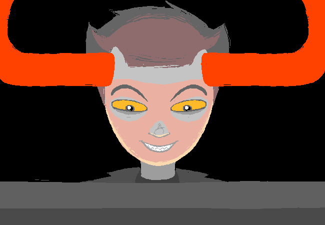
TAVROS, now using robotic legs fitted with Kanaya and Equius’s help, wants to direct Becsprite against Jack. Jade refuses to risk her best friend.
His earlier use of animal communion explains a painful mystery: he had Bec redirect a bullet to save young Jade, killing Grandpa, whom he mistook for an intruder. Vriska mocks Tavros’s new confidence and claims far more deliberate interference in the kids’ lives. Furious, Tavros sets out to confront her.
Recap #5
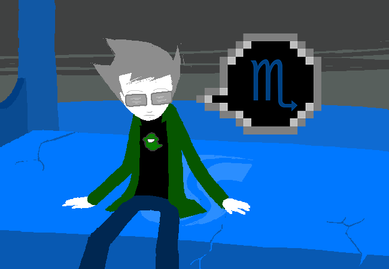
After his burst of wind, John reaches the top of his ECHELADDER, the game’s leveling system. Vriska directs him toward a further advancement: the GOD TIER.
He finds his QUEST BED outside a salamander village and agrees to let Vriska put him to sleep. Jack finds him there and stabs him through the chest.
Recap #5
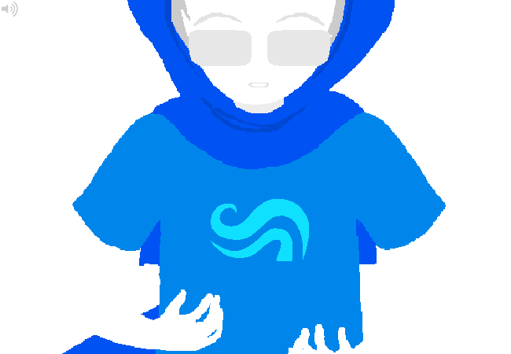
WV watches John’s body remain lifeless on the bed. But on the Battlefield, his dreamself rises from a matching slab and becomes the fully realized, god-tier HEIR OF BREATH.
John lives on in that transformed body. The exile watching the original body has no way to see the whole event and believes he has lost him.
Recap #5
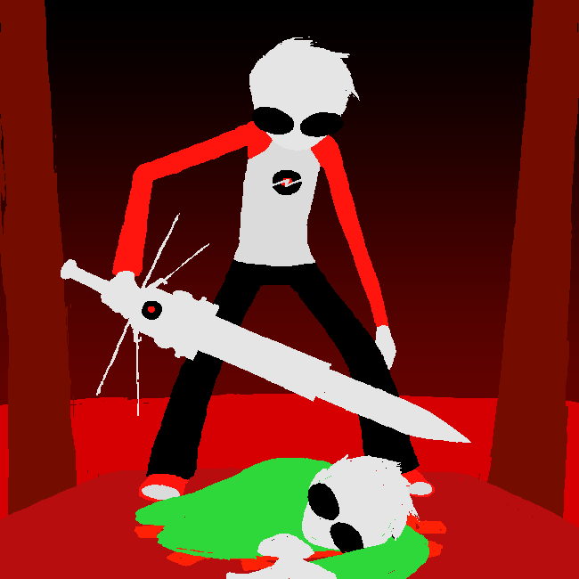
Dave asks Terezi how he can reach the god tier. Her demonstration brings him face to face with a DOOMED DAVE, an alternate self she sent back in time to sleep on his quest bed.
Terezi urges him to kill the sleeping Dave so that version can ascend. Dave doubts that ascension can rescue a doomed self. He refuses, and decides to stop following her instructions.
Recap #5
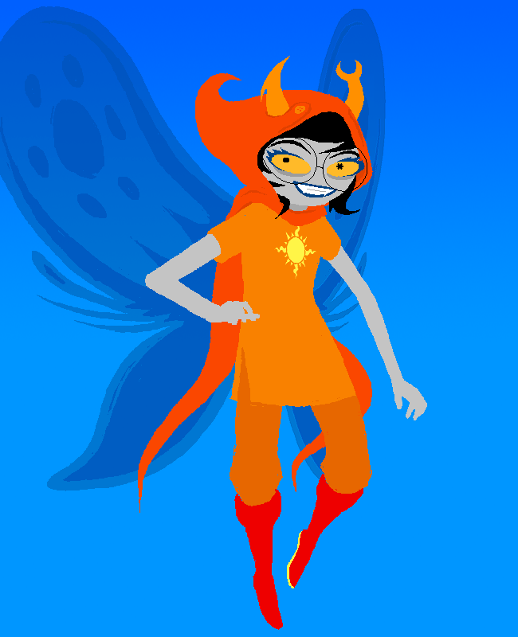
A flashback explains VRISKA’S own ascension. After Aradia’s beating, Tavros brought her dying body to her quest cocoon. Vriska demanded that he finish killing her, but he fled.
She eventually died there anyway and rose on the Battlefield as the god-tier THIEF OF LIGHT, her arm and eye restored. She continues to treat Tavros’s refusal as a failure he owes her for.
Recap #5
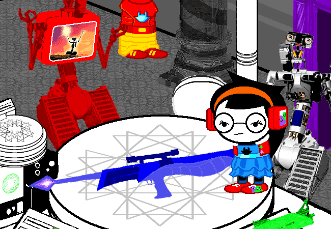
Back on LOFAF, Jade puts Dave’s supplies to use, making clothes, weapons, and computerized goggles that can observe the session. Eridan also supplies the code for AHAB’S CROSSHAIRS, hoping she will take up his imagined rivalry with Rose.
Jade recognizes the rifle from the robot bunny’s weapons. Her mysterious pen pal supplied those weapons and is, she accidentally reveals, her grandson from the future. She leaves the new rifle outside to find its way to him.
Recap #5
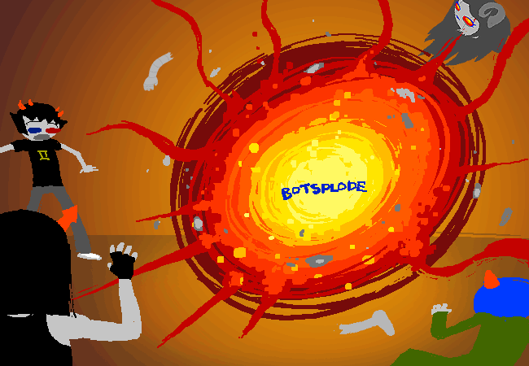
Back in the trolls’ lab, Aradia says goodbye to Sollux and apologizes for the suffering he has endured. She cannot tell him whether they will meet again.
Her robot body explodes. For the friends watching, this is another bewildering loss as the countdown continues.
Recap #5
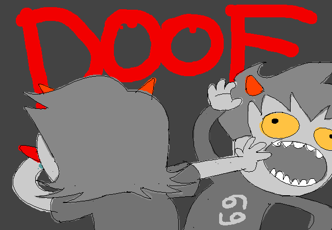
The doomed Dave left sleeping on the quest bed wakes and gets up. The other Dave refused to kill him, but Jack appears and does so before he can escape.
Terezi watches through Trollian, then runs off in distress. The main-timeline Dave is still alive, but that does not undo the death of the other boy or her part in arranging the situation.
Recap #5
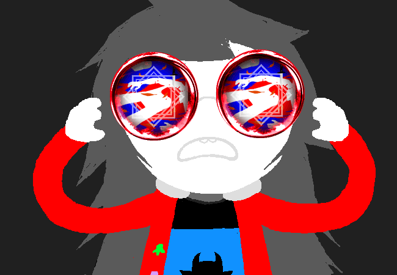
Through her new goggles, Jade sees Bro’s body, Davesprite’s bloodied pendant, and the dead Dave. Dave reassures her that he is still alive: the body belongs to a doomed version of him.
Jade wants a way to defeat Jack that does not depend on a suicide mission. Dave still has time loops to complete, so she must act on her own. She returns to Tavros’s proposal to use Becsprite’s power against Jack.
Recap #5
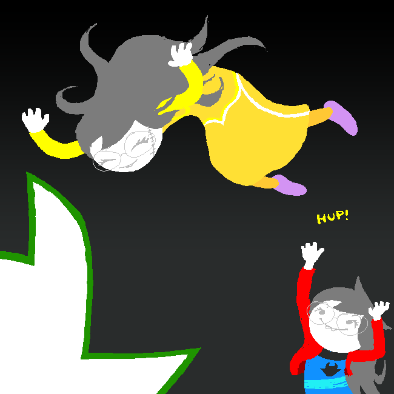
Tavros has already left to confront Vriska, so Jade cannot reach him. Instead, she goes to Grandpa’s laboratory, where he kept her stuffed dreamself after retrieving it from the Battlefield.
She throws the body into Becsprite, completing his second prototyping. The result is JADESPRITE: her dead dreamself combined with Bec’s sprite and powers.
Recap #5
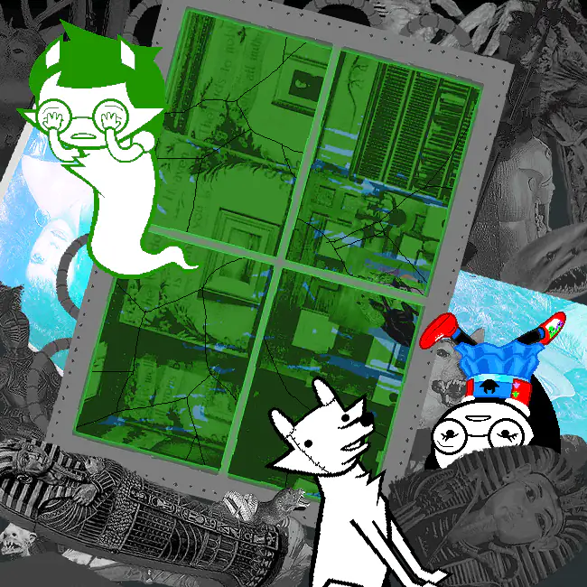
Jadesprite is overwhelmed and distressed at being brought back. Her outburst breaks the laboratory free from the house and sends it rolling downhill.
Jade has created someone who needs help, rather than the ready rescuer she hoped for. Both sit among the wreckage beside Grandpa’s damaged FOURTH WALL.
Recap #5
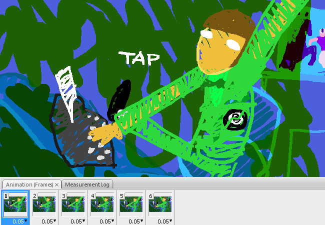
The fourth wall leads us back to ANDREW HUSSIE, Homestuck’s creator, appearing in his own comic. He introduces Ms. Paint and types an in-story recap of the tangled events so far.
This reading stops here: John has ascended, Jack remains a threat to both groups, Rose is planning a mission to the Green Sun, and Jade’s attempted solution has gone badly. The trolls’ countdown is still running.